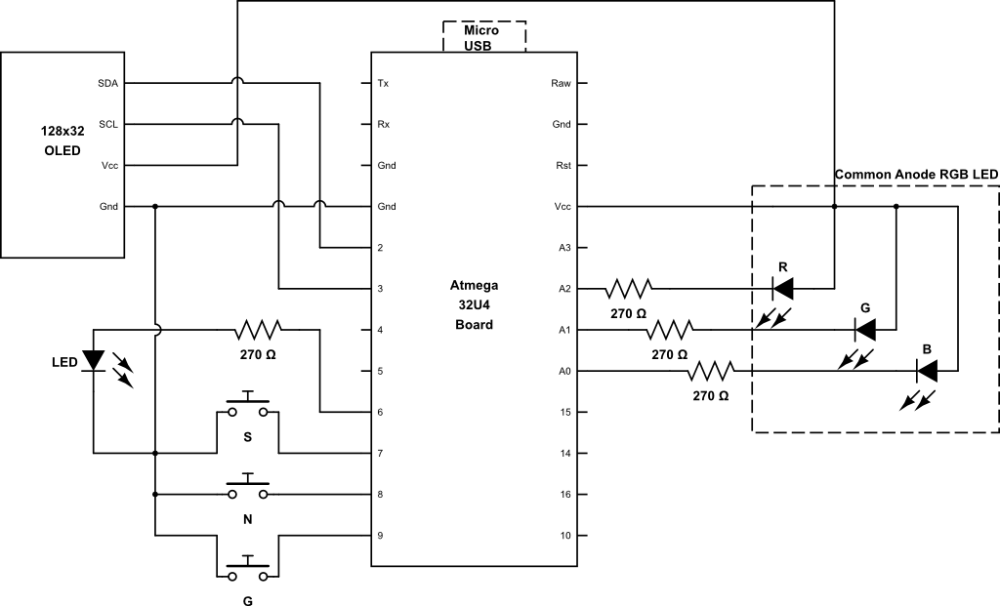
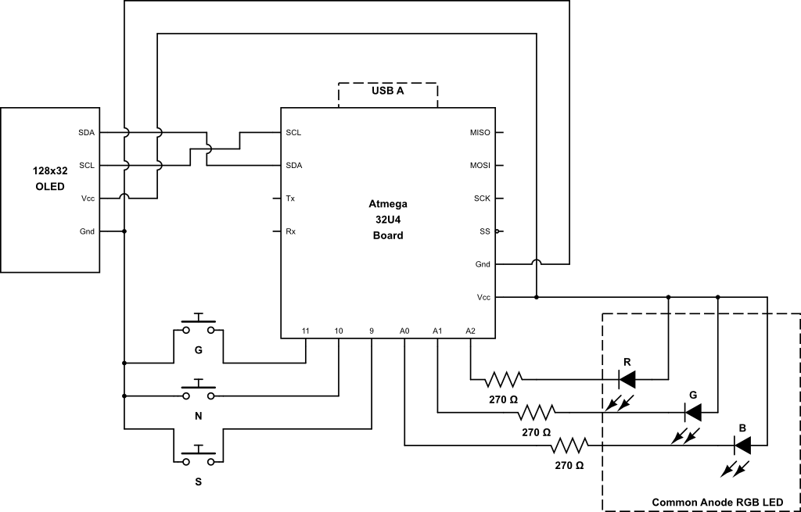
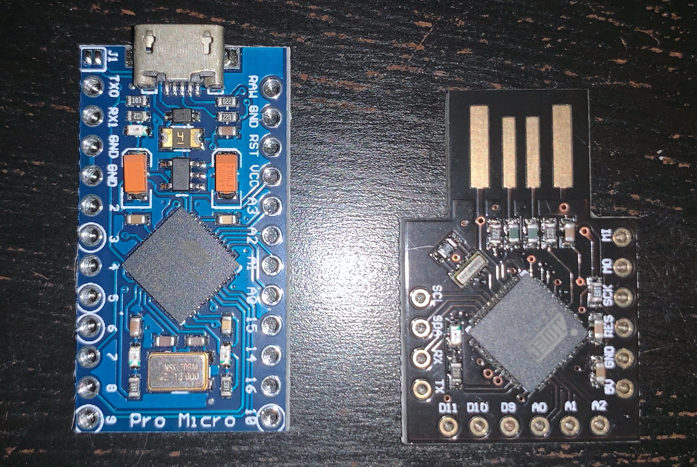
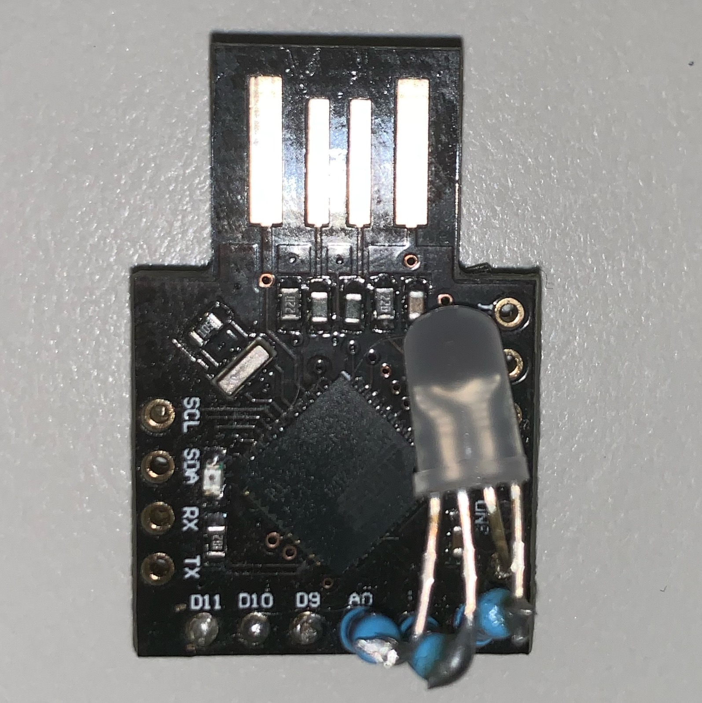
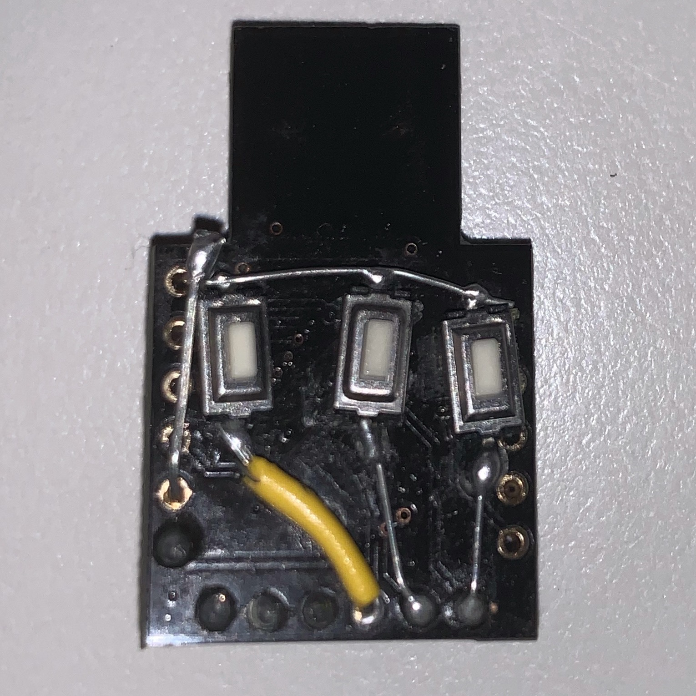
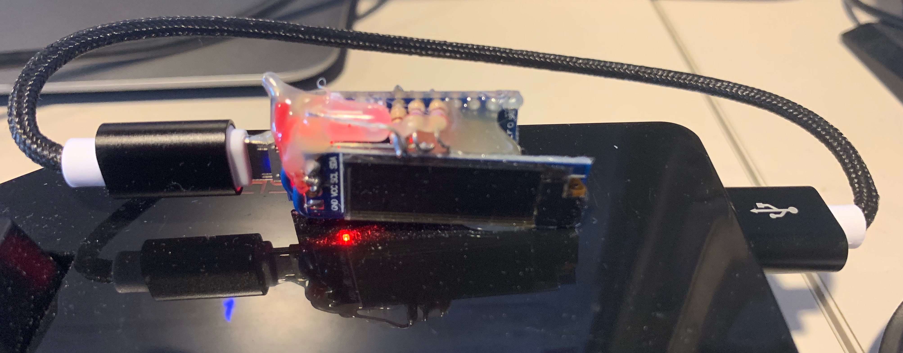
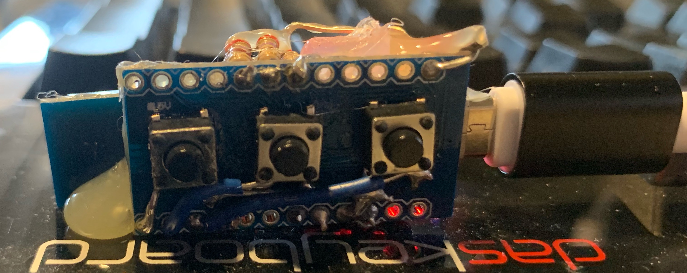

Introduction
All software, schematics, board layouts and mesh files can be found at https://github.com/qvdm/PasswordThing
Circuit
The circuit for the PT models U and a are shown below. The microprocessor board is a generic ATmega 32U4 "Leonardo" compatible board with a micro-usb (model U) or USB A (model A) connector. The Micro USB board is often called ProMicro, while some vendors call teh USB A board 'Beetle'. The boards are available from Aliexpress and other vendors.
Note that boards like Arduino Nano and similar, which use an Atmega 328P processor, will not work, since the operation of the project depends on the Atmega 32U4's ability to act as a USB HID device, emulating a keyboard.
 PT-U circuit diagram
 PT-A circuit diagram
Here are the bare boards used for the U and A versions of the project.
 Boards used for model U (left) and A (right)
The peripheral components needed are:
- A common-anode RGB LED (you can use common cathode, but then you need to adjust the wiring and code appropriately).
- A 270 ohm resistor for each of the R, G and B led channels. The value nay be tweaked to change brightness.
- A monochrome LED, and another 270 ohm resistor for model U.
- Three momentary push button switches.
- An optional 128x32 I2C OLED display.
Note that you would typically not wire in an OLED display for a model A (although it is supported). The buttons are connected to D9, D10 and D11 in model A, as opposed to D9, D8, D7 in the model U. You may wish to ommit the middle ("Next") button on a model A, to allow the use of larger buttons, since a long press of "Select" has the same functionality.
Finally, the model A board has a build-in LED on D6, so no need to connect an external monochrome LED.
Assembly
The project can be assembled many ways. A custom 3D-printed case is probably the best solution in the long term.
The photos below show the front and back of two of my prototype model U and A assemblies. The "sandwhich" construction of the model U shown is very compact and allows the unit to be glued to your keyboard for easy access. (Only do this at home of course - see the Security section in the documentation).
Assembled model A board.
 Model A top view
 Model A bottom view
In this instance, I installed three buttons, but I found it akward to use.
I hihgly recommend using larger buttons, like in the model U example below,
and using only two of them (#1 and #3) .
The images below show an example of an assembled model U board.
 Model U front view
 Model U back view
Software Build
The platformio platform is recommended for compiling the code. Ensure that support for the Arduino Leonardo board is installed.
There is a separate build specification for each of the two board types. Ensure that you build the correct one for your board, otherwise the buttons and led will not work correctly.
Documentation
This documentation was generated with mkdocs. There is a yaml file in the root of the repository.
Coding Style and future development
The code started off as a FreeRTOS project, written in C, which is reflected in the lack of C++ feature usage, and some naming conventions. FreeRTOS was eventually dumped to free up flash space for features, and because the application is not time critical at all.
The remnants of the RTOS origin of the code can be seen in the main 'Task' for each major function, that is now simply periodically called in the main loop. Works fine as it is, but there is potentially room for optimization there.